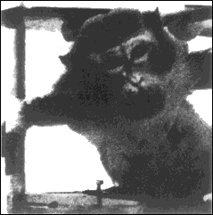

In 1974, California Governor Ronald Reagan was asked about decriminalizing marijuana.
After producing the Heath/Tulane University study, the so-called “Great Communicator” proclaimed, “The most reliable scientific sources say permanent brain damage is one of the inevitable results of the use of marijuana.” (L.A. Times)
The report from Dr. Heath had concluded that Rhesus monkeys, smoking the equivalent of only 30 joints a day, began to atrophy and die after 90 days.

And ever since, dead brain cells found in monkeys who were forced to smoke marijuana has been given maximum scare play in federal booklets and government sponsored propaganda literature against pot.
Senator Eastland of Mississippi used it throughout the mid-1970s to horrify and stop national legislators from supporting NORML’s decriminalization bills in Congress, mostly sponsored by the late Senator Jacob Javitts of New York.
Reports of the study have also been distributed by the hierarchy of drug rehabilitation professionals as part of their rationalization for wanting to get kids off pot, based on supposed scientific studies. It is used to terrorize parent groups, church organizations, etc., who redistribute it still further.
Heath killed the half-dead monkeys, opened their brains, counted the dead brain cells, and then took control monkeys, who hadn’t smoked marijuana, killed them too, and counted their brain cells. The pot smoking monkeys had enormous amounts of dead brain cells as compared to the “straight” monkeys.
Ronald Reagan’s pronouncement was probably based on the fact that marijuana smoking was the only difference in the two sets of monkeys. Perhaps Reagan trusted the federal research to be real and correct. Perhaps he had other motives.
Whatever their reasons, this is what the government ballyhooed to press and PTA, who trusted the government completely.
In 1980, Playboy and NORML finally received for the first time—after six years of requests and suing the government—an accurate accounting of the research procedures used in the infamous report:
When NORML/Playboy hired researchers to examine the reported results against the actual methodology, they laughed.
As reported in Playboy, the Heath “Voodoo” Research methodology involved strapping Rhesus monkeys into a chair and pumping them with equivalent of 63 Colombian strength joints in “five minutes, through gas masks,” losing no smoke. Playboy discovered that Heath had administered 63 joints in five minutes over just three months instead of administering 30 joints per day over a one-year period as he had first reported. Heath did this, it turned out, in order to avoid having to pay an assistant’s wages every day for a full year.
The monkeys were suffocating! Three to five minutes of oxygen deprivation causes brain damage—“dead brain cells.” (Red Cross Lifesaving and Water Safety Manual)
With the concentration of smoke used, the monkeys were a bit like a person running the engine of a car in a locked garage for 5, 10, 15 minutes at a time—every day!
The Heath Monkey study was actually a study in animal asphyxiation and carbon monoxide poisoning.
Among other things, Heath had completely (intentionally? incompetently?) omitted discussion of the carbon monoxide the monkeys inhaled.
Carbon monoxide, a deadly gas that kills brain cells, is given off by any burning object. At that smoke concentration, the monkeys were, in effect, like a person locked in a garage with the car engine left running for five, 10, 15 minutes at a time every day!
All subsequent researchers agree the findings in Heath’s experiment regarding marijuana were of no value, because carbon monoxide poisoning and other factors were totally left out and had not been considered in the report. This study and others, like Dr. Gabriel Nahas’ 1970s studies, tried to somehow connect the THC metabolites routinely found in the fatty tissue of human brains, reproductive organs, and other fatty areas of the body to the dead brain cells in the suffocated monkeys.
Now, in 1999, 17 years have passed and not a single word of Dr. Heath’s or Dr. Nahas’ research has been verified! But their studies are still hauled out by the Partnership for a Drug Free America, the Drug Enforcement Administration, city and state narcotics bureaus, plus politicians and, in virtually all public instances, held up as scientific proof of the dangers of marijuana.
This is U.S. government propaganda and disinformation at its worst! The public paid for these studies and has the right to the correct information and history being taught in our taxpayer sponsored schools.
In 1996, Gabriel Nahas, in France, sued Mishka, the translator of the French edition of this book, “L’Emperor est Nu!”, for damages. Mishka wrote that Nahas’ studies were viewed by the world as garbage. The French court, upon hearing all the testimony by Nahas, and after Nahas had spent an quivalent of tens of thousands of American dollars on legal fees, awarded him its highest insult: one franc, the equivalent of approximately 15 cents American for damages, and no legal fees!
the authorized on-line version of Jack Herer’s “The Emperor Wears No Clothes”
| previous page | Chapter 15 | next page |